Design is what I do. But drawing, photography, research, concerts, and everything in between is who I am. Here's the rest of it.
I've been drawing for as long as I've been making things with computers — and the two have always fed into each other. My illustration work is mostly character-based, ink-heavy, and done by hand before anything touches a screen.
It's where I work out visual ideas without constraints, and it's probably why my UX work tends to have a sketchier, more human quality to it than purely digital-first design.
View on Instagram ↗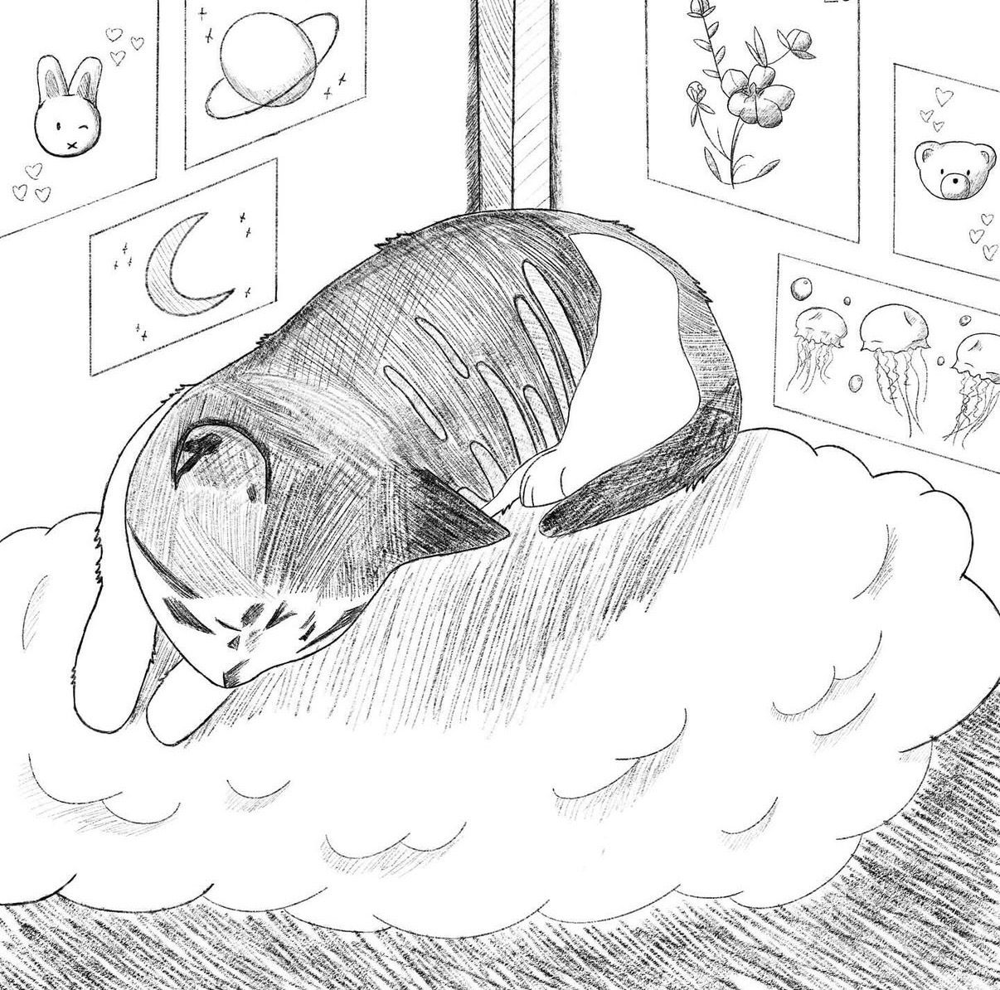
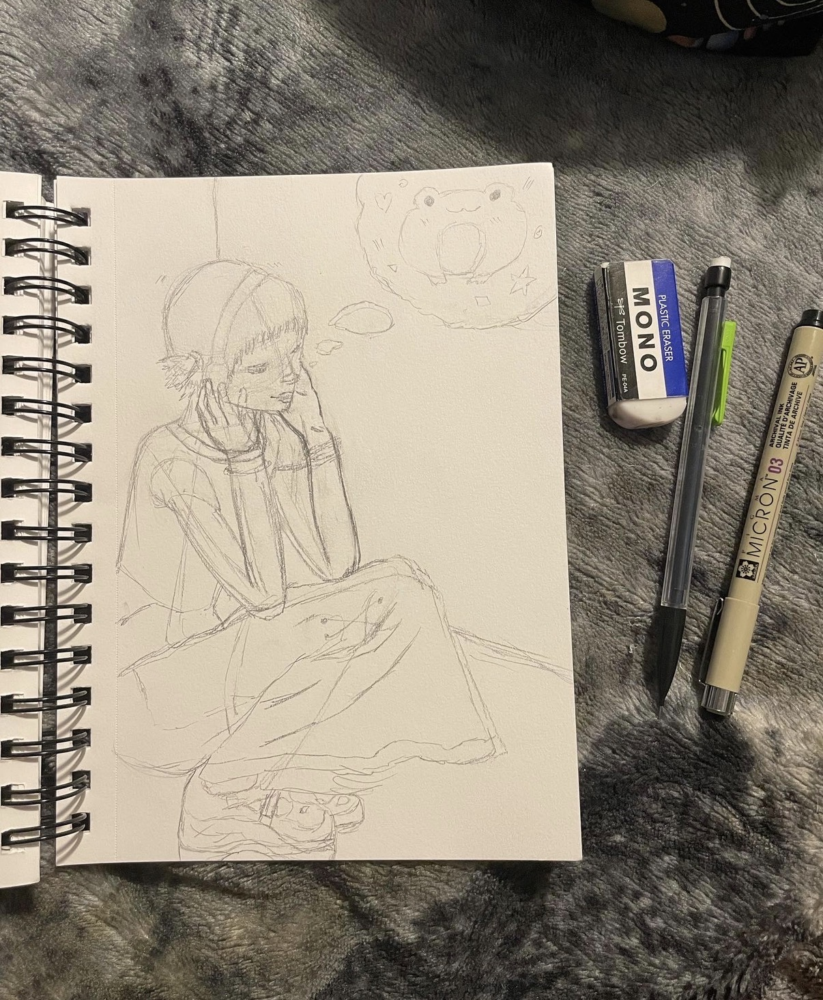
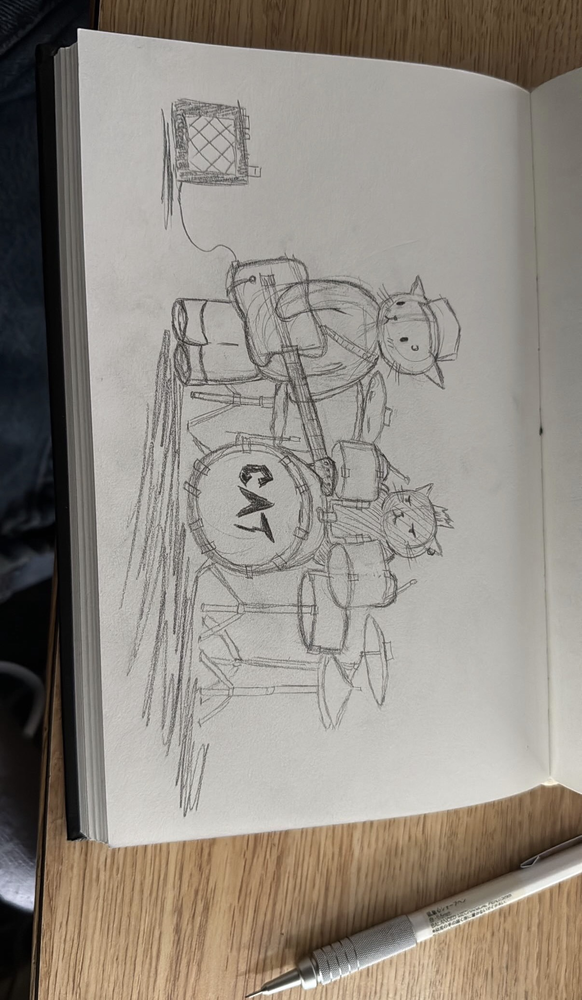
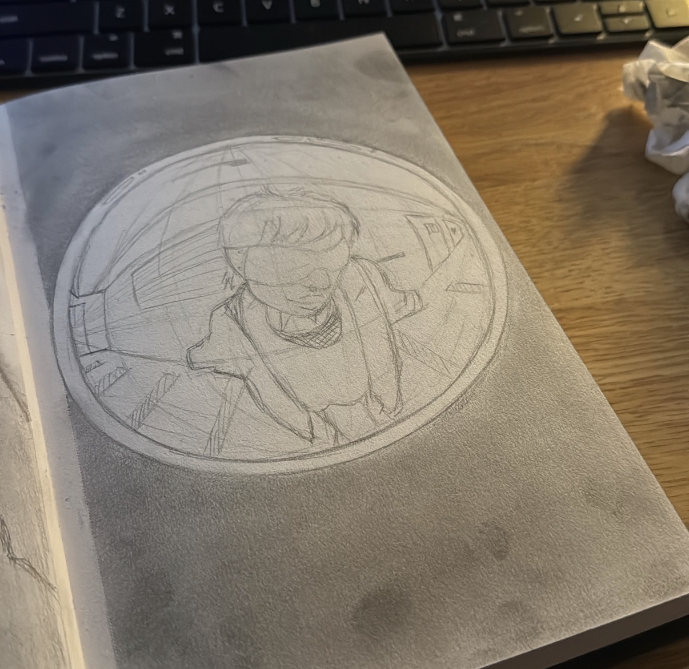
I shoot everything — people, places, small moments. It's a different way of composing, and it's made me better at thinking about framing, light, and what deserves attention in a design.
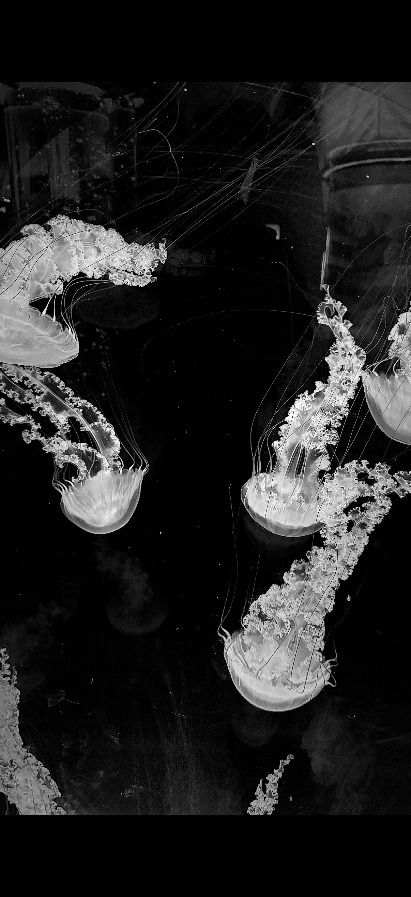
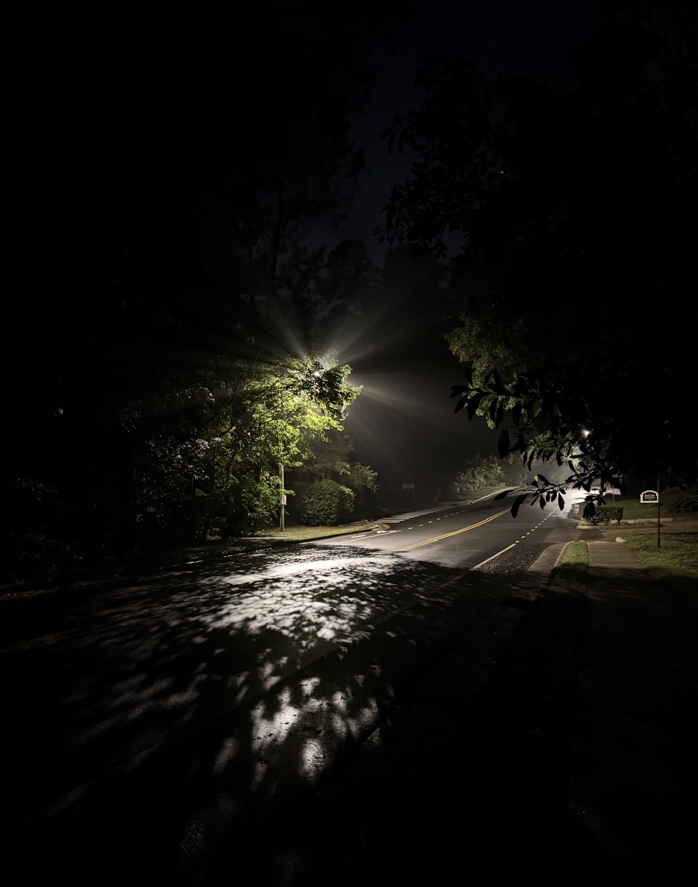
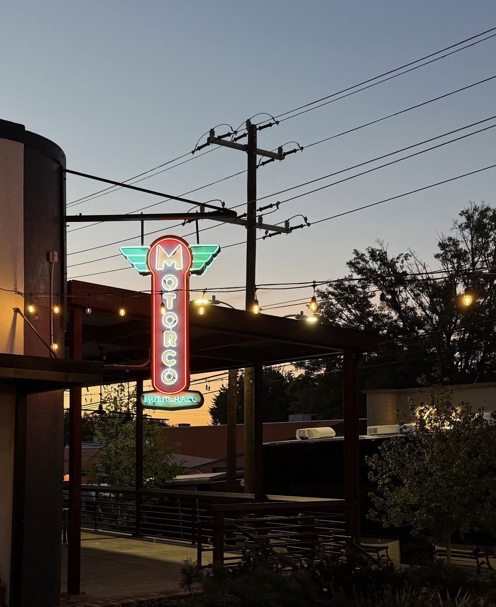
Full work history and research experience →
View on LinkedIn ↗Concerts, fashion, Chapel Hill and a summer in San Juan. The stuff that fills in the rest of the picture.
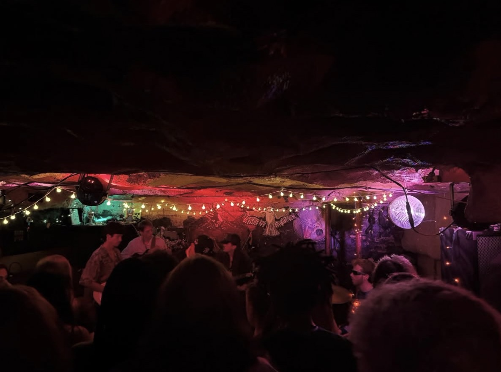
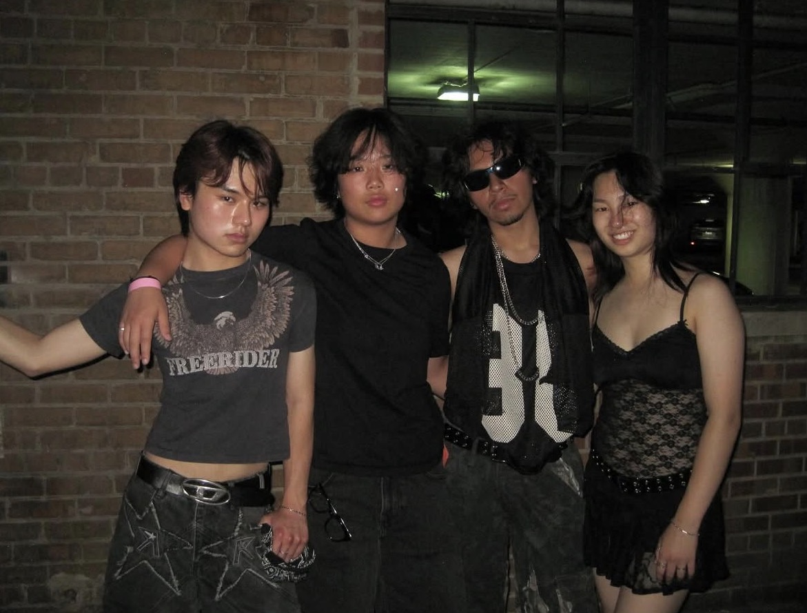
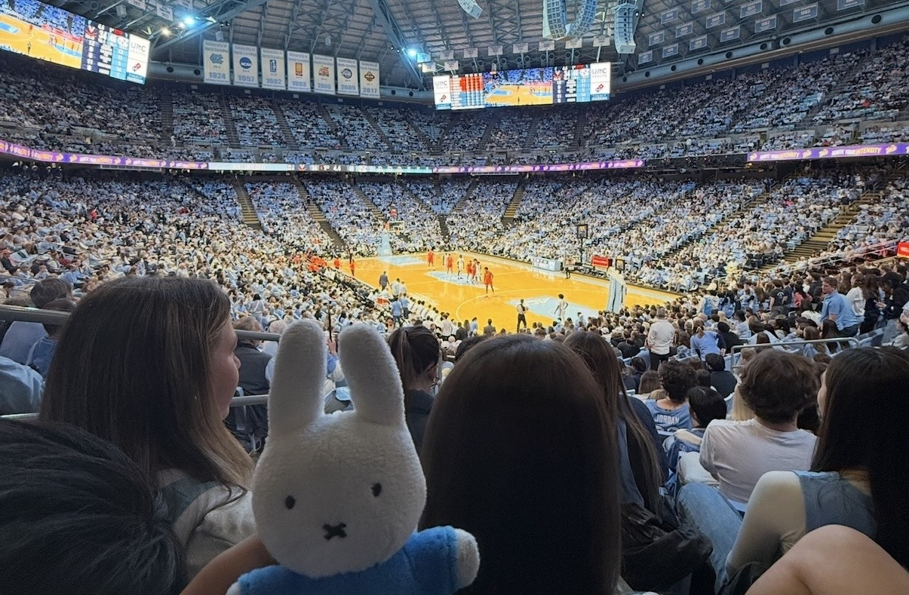
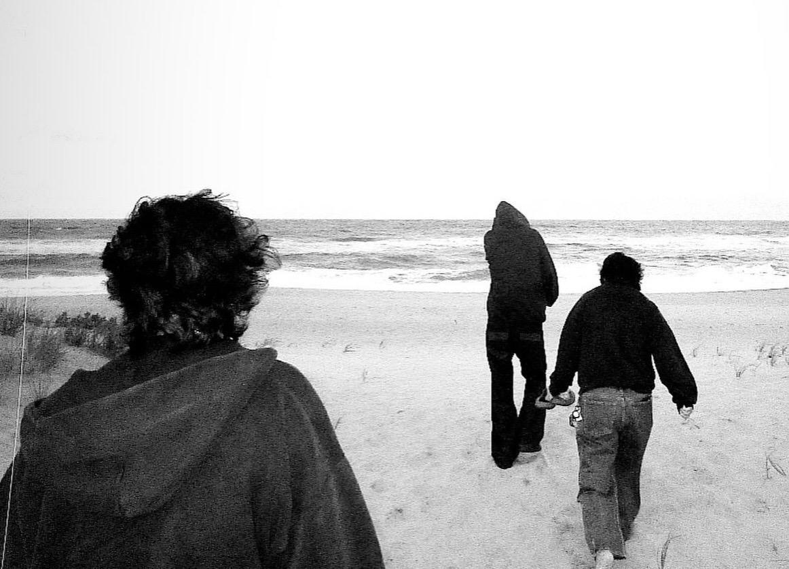
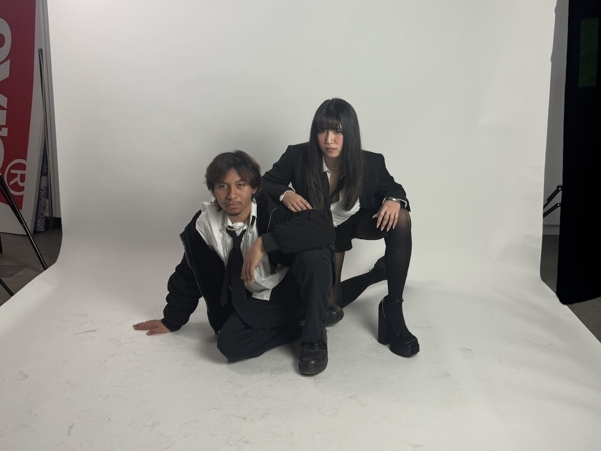